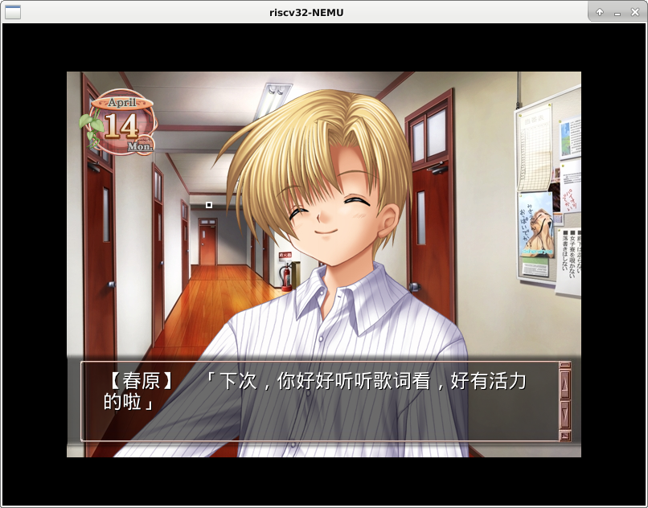
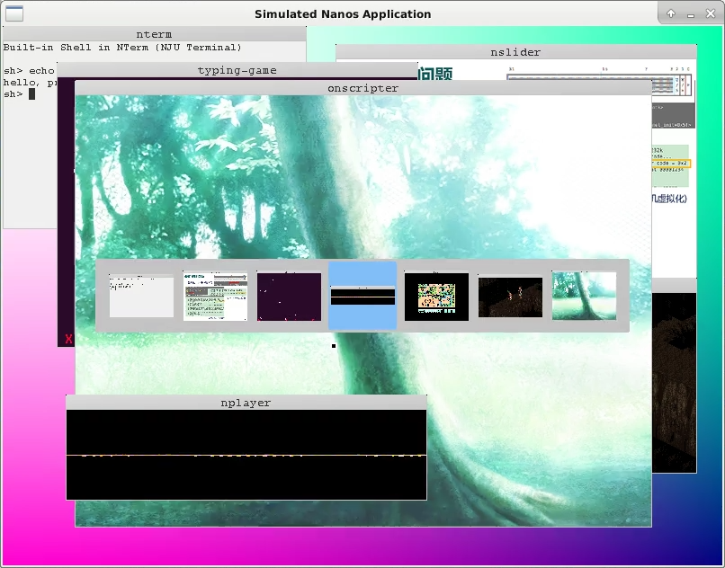
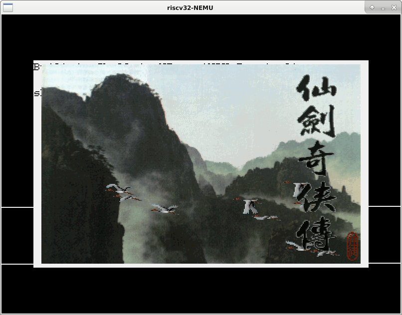
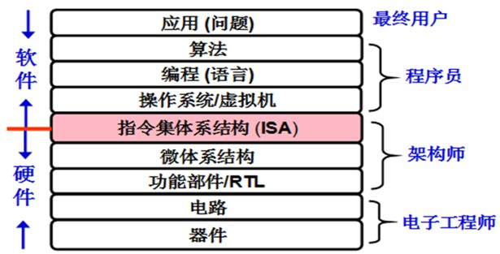

编写不朽的传奇
在PA的最后, 我们来做些好玩的事情.
展示你的计算机系统
目前Nanos-lite中最多可以运行4个进程, 我们可以把这4个进程全部用满.
具体地, 我们可以加载仙剑奇侠传, Flappy Bird, NSlider和hello程序,
然后通过一个变量fg_pcb来维护当前的前台程序, 让前台程序和hello程序分时运行.
具体地, 我们可以在Nanos-lite的events_read()函数中让F1, F2, F3这3个按键来和3个前台程序绑定,
例如, 一开始是仙剑奇侠传和hello程序分时运行, 按下F2之后, 就变成Flappy Bird和hello程序分时运行.
特别地, 你还可以加载3份开机菜单程序或者NTerm, 它们可以在VME的支持下自由切换, 就好像在同时玩3个红白机游戏一样, 很酷!
展示你的计算机系统
添加前台程序及其切换功能, 展示你亲手创造的计算机系统.
运行ONScripter模拟器
在新分支中尝试
以下均为选做内容, 且可能会对必做部分造成不兼容的改动, 如果你想要体验以下内容, 请创建一个新分支, 并在新分支中进行代码的修改.
ONScripter是一个开源的NScripter脚本引擎, 可以用来运行用相应脚本编写的文字冒险游戏.
我们从这个repo克隆了项目, 并将其移植到Navy中.
在navy-apps/apps/onscripter/目录下运行make init, 将会从github上克隆移植后的项目.
这个移植后的项目仍然可以在Linux native上运行:
在repo/目录下执行make, 将ONScripter编译到Linux native,
但你可能还需要安装一些库, 请STFW自行解决;
然后下载一些较小的ONS游戏进行测试(例如约100MB的"星之梦", 请自行STFW),
对游戏进行解压缩后, 运行如下命令启动游戏:
./repo/build/onscripter -r 游戏解压路径
由于是在Linux native上运行, 你可以使用鼠标进行游戏,
也可以通过方向键移动光标, 通过ENTER/ESC键进行确定/取消的操作.

为了将ONScripter移植到Navy, 我们首先需要了解ONScripter依赖于哪些库.
你可以通过阅读navy-apps/apps/onscripter/repo/Makefile中的LDFLAGS变量来了解依赖的库:
SDL- 在Navy中, 我们通过libminiSDL来提供功能兼容的API.SDL_ttf- 这是一个truetype字体库, 在Navy中, 我们通过libminiSDL和stb项目中的truetype字体解析器, 提供和SDL_ttf兼容的部分API, 主要用于实现truetype字体的光栅化.SDL_image- 这是一个图像库, 在Navy中, 我们通过libminiSDL和stb项目中的图像解码器, 提供和SDL_image兼容的部分API, 主要用于实现JPG, PNG, BMP等图像格式的解码.SDL_mixer- 这是一个音频混声库, 在Navy中, 我们通过libminiSDL和libvorbis, 提供和SDL_mixer兼容的部分API, 主要用于实现多通道的OGG音频混声.bz2- 这是一个压缩库, 在Navy中, 我们去掉了ONScripter中压缩文件访问相关的功能, 因此编译到Navy时, ONScripter的运行不依赖于压缩库.m- 这是glibc的数学库, 在Navy中通过libfixedptc提供一些实数的运算.
缓存和字体光栅化
navy-apps/libs/libSDL_ttf/src/ttf.c中的TTF_RenderGlyph_Shaded()
函数用于对字体库中的一个字符进行光栅化, 生成相应的像素信息和调色板.
代码在生成调色板的时候添加了一个小小的缓存, 你知道它是如何工作的吗?
为什么它可以提升性能? (虽然提升的幅度不是特别明显)
需要说明的是, 由于Navy中上述库的一些缺陷, 我们并不能在Navy上完美地运行所有的ONS游戏. 具体地:
- stb项目中的truetype字体解析器使用的光栅化算法可能无法很好地对部分truetype字体进行光栅化,
导致文字间距较小, 显示效果不如Linux本地的
SDL_ttf库 - Navy中的库只支持对OGG音频的解码, 因此不支持需要播放其它格式音频(如MP3)的ONS游戏
补充SDL相关库
我们先考虑在Navy native上运行ONScripter.
由于ONS游戏一般需要更大的屏幕才能运行, 我们需要在
navy-apps/libs/libos/src/native.cpp中定义宏MODE_800x600.
这样以后, 我们就可以尝试在Navy native上运行ONScripter了:
cd navy-apps/apps/onscripter
make ISA=native run mainargs="-r 游戏解压路径"
如果你看到终端输出类似以下的信息, 就说明ONScripter已经成功地读取到游戏信息了:
ONScripter-Jh version 0.7.6 (20181218, 2.96)
Display: 800 x 600 (32 bpp)
Audio: -937182692 Hz 0 bit stereo
其中显示分辨率和具体的ONS游戏相关, 音频信息的输出是一些垃圾信息, 这是因为我们还没有实现混声库. 接下来ONScripter可能会在miniSDL库中触发assertion fail, 或者报告无法打开文件而退出.
为了让ONScripter成功运行, 我们需要对miniSDL库的实现进行补充. 需要补充的功能包括(具体细节请务必RTFM):
timer.c: 添加计时器的注册和移除功能. 其中回调函数的实现可以参考PA3中填充音频数据的实现方式.
// 注册一个计时器, 经过interval毫秒后调用callback
SDL_TimerID SDL_AddTimer(uint32_t interval, SDL_NewTimerCallback callback, void *param);
// 移除一个已经注册的计时器
int SDL_RemoveTimer(SDL_TimerID id)
event.c: 添加事件的入队和检查. SDL支持用户添加自定义的事件, 因此我们需要通过一个队列来缓冲未处理的事件. 实现事件队列后, 我们可以把从NDL中读到的按键事件也通过SDL_PushEvent()添加到事件队列中, 这样就可以对各种事件进行统一处理了.
// 往事件队列中添加一个事件ev
int SDL_PushEvent(SDL_Event *ev);
// 对事件队列中前numevents个类型与mask匹配的事件进行action操作
// 关于mask的含义, 可以阅读`SDL_EVENTMASK()`这个宏
// 在ONScripter中, numevents总是1且action总是SDL_GETEVENT, 这样可以简化实现
int SDL_PeepEvents(SDL_Event *ev, int numevents, int action, uint32_t mask);
file.c: SDL库向用户程序提供了SDL_RWread(),SDL_RWwrite()等统一的接口, 并通过函数指针对各种平台的文件操作进行抽象, 使得用户无需关心具体文件操作的细节. 这样的思想和我们在PA3中介绍的VFS非常相似, 具体可以参考这里. 在ONScripter中, 我们只会用到普通文件和"内存文件", 你需要分别为它们实现相应的文件操作. 其中, "内存文件"是指把内存中的一段空间看作字节序列, 并通过文件操作来访问它. 注意这些操作的语义和返回值可能与libc中对应的库函数有所不同, 请仔细RTFM.
glibc对内存文件的支持
事实上, glibc提供了一个fmemopen()的库函数来支持内存文件的操作,
你可以通过fmemopen()大幅简化你的实现, 具体用法请RTFM.
除了miniSDL库之外, 我们还需要实现SDL_image库中的两个API. 第一个API是
SDL_Surface* IMG_Load_RW(SDL_RWops *src, int freesrc);
它和你在PA3中实现的IMG_Load()非常类似,
只不过是从SDL抽象文件中解码出图像的像素信息.
ONScripter使用的时候, src的类型总是内存文件, 而freesrc则总是0,
这些信息可以帮助你简化实现.
第二个API是
int IMG_isPNG(SDL_RWops *src);
它用于判断SDL抽象文件src是否为PNG格式的图像文件.
判断文件类型的最好方法就是检查文件中存储的魔数(magic number):
回顾一下, 我们认为一个文件是ELF文件, 是因为它的魔数是0x7f 0x45 0x4c 0x46,
PNG文件也有类似的魔数, 具体请STFW.
运行ONScripter
实现上述内容后, 你就可以在Navy native上运行ONScripter了. 虽然还没声音, 但你还是可以看到图像并且进行操作.
由于Navy不支持鼠标, 你只能通过键盘进行操作.
我们在ONScripter的代码中添加了一个4x4像素的简易光标,
键入方向键的时候你可以看到光标的移动.
但这个简易光标的实现并不完美, 有时候你会看到屏幕上出现多个光标.
实现混声库SDL_mixer
此部分为选做内容
前置任务: 在PA3中实现NDL和miniSDL的音频播放功能.
需要说明的是, 即使不实现混声库, ONScripter仍然可以在无音频的情况下运行(但无法支持自动阅读功能). 不过对文字冒险游戏来说, 音频会占据游戏体验的很大比例.
游戏中一般会同时出现多个音频片段, 例如在战斗的过程中, 首先会有背景音乐BGM, 施放法术的过程中会播放法术的音效, 法术对敌方造成伤害的时候会播放敌方受伤的音效. 在玩家来看, 这些音频片段都是同时播放的, 而混声库SDL_mixer就是用于对多个音频进行管理并通过混声实现同时播放的效果.
首先我们提供混声库SDL_mixer的手册.
虽然手册中描述的大量的API, 但我们不必全部实现它们.
ONScripter用到的API已经在navy-apps/libs/libSDL_mixer/src/mixer.c中列出,
我们也无需实现文件中的所有API, 有一些API只是用于链接,
ONScripter在运行部分游戏的时候并不会调用它们.
需要注意的是, 实现这些API的时候请务必通过RTFM阅读相应的细节.
SDL_mixer可以基于SDL的音频API进行实现.
具体地, 你可以在Mix_OpenAudio()中调用SDL_OpenAudio()和SDL_PauseAudio(),
在Mix_CloseAudio()中调用SDL_CloseAudio().
回顾SDL_OpenAudio()需要提供一个填充音频数据的回调函数,
因此SDL_mixer的实现可以分为两部分, 一部分是用于维护音频状态的各种API,
另一部分是在回调函数中实现真正的混声效果.
播放BGM
播放BGM的功能相对简单一些, 我们可以先来实现它. 具体地, 你需要实现如下的API:
Mix_Music *Mix_LoadMUS_RW(SDL_RWops *src);
void Mix_FreeMusic(Mix_Music *music);
int Mix_PlayMusic(Mix_Music *music, int loops);
int Mix_VolumeMusic(int volume);
int Mix_HaltMusic();
int Mix_PlayingMusic();
由于此时只有BGM的音频, 不存在其它音效的音频, 因此我们需在回调函数中进行混声, 就可以实现BGM的播放.
在ONScripter中播放BGM
实现上述API, 在ONScripter中播放ONS游戏的BGM.
在这些API中, Mix_PlayMusic()用于开始播放一段音乐,
它可以通过libvorbis中的stb_vorbis_open_memory()打开音频文件,
然后在回调函数中通过stb_vorbis_get_samples_short_interleaved()对音频进行解码,
具体用法可以阅读navy-apps/libs/libvorbis/include/vorbis.h中的文档, 或者参考NPlayer的实现.
其它的API都和音频状态的维护相关, 你可以自行决定如何实现状态的维护.
在ONScripter中实现BGM的自动重放
SDL_mixer库支持音频的自动重放: 当音频播放完毕之后,
就会自动从头开始重新播放, 无需用户手动播放.
这是通过Mix_PlayMusic()中的loops参数实现的.
此外, 你可以通过stb_vorbis_get_samples_short_interleaved()的返回值得知相应音频是否播放完毕,
以及通过stb_vorbis_seek_start()让音频从头开始播放, 具体用法请RTFM.
实现正确后, 你就可以在ONScripter中欣赏到自动重放的BGM了.
播放音效
为了支持多个音效的同时播放, SDL_mixer库把一个音效的对象称为"片段"(chunk), 并且引入了"通道"(channel)的概念. 用户可以把一个片段放在任意通道上进行播放, 多个通道中的片段会与BGM进行混声, 从而实现BGM与多个音效同时播放的效果. 注意这里的"通道"和音频文件中的"声道"虽然都叫channel, 但它们的含义并不同, 我们可以通过下图理解它们:
+---> Left Channel
+++-+
* = |L|R|
+-+++
+---> Right Channel
+-----+------------------------------------------------------------+-----+
Channel 1 | |************************ Chunk 1 ***************************| |
+-----+------------------------------------------------------------+-----+
+-----+-------------+--------------------+-------------------+-----------+
Channel 2 | |** Chunk 2 **| |***** Chunk 3 *****| |
+-----+-------------+--------------------+-------------------+-----------+
+---------------------------------+-------------+------------------------+
Channel 3 | |** Chunk 2 **| |
+---------------------------------+-------------+------------------------+
上图展示了3个通道, 每个通道按照时间播放各自的片段, 当同一时刻多个通道中都有片段需要播放时, 回调函数需要对它们进行混声. 而考虑每个片段自身, 它们又是双声道的, 即每个采样样本都具有左声道和右声道的数据.
理解上述概念之后, 你就可以来实现和音效播放相关的如下API了:
Mix_Chunk *Mix_LoadWAV_RW(SDL_RWops *src, int freesrc)
void Mix_FreeChunk(Mix_Chunk *chunk)
int Mix_AllocateChannels(int numchans);
int Mix_PlayChannel(int channel, Mix_Chunk *chunk, int loops);
int Mix_Volume(int channel, int volume);
void Mix_Pause(int channel);
void Mix_ChannelFinished(void (*channel_finished)(int channel));
其中Mix_AllocateChannels()用于分配相应数量的通道,
Mix_ChannelFinished()用于设置一个通知用户"片段播放结束"的回调函数,
ONScripter通过这个回调函数来实现文字冒险游戏的自动阅读功能.
其余API与BGM的相应API很相似, 不过操作对象变成了通道, 具体行为请RTFM.
最后你还需要在填充音频数据的回调函数中实现混声的功能: 你需要检查BGM和各个通道是否处于播放状态, 若是, 则对相应的音频数据进行混声.
在ONScripter中播放音效
实现音效播放相关的API和混声功能. 实现正确后, 你就可以在ONScripter中比较完整地运行ONS游戏了.
采样频率和声道数量的转换
ONScripter默认会以"44100Hz双声道"的方式初始化音频设备, 音频文件符合这一属性的ONS游戏可以正常地进行, 如"CLANNAD". 但如果将要播放的音频文件属性并不是"44100Hz双声道", 直接播放它们就会产生失真的现象. 例如在某个ONS版本的"Ever 17"中, BGM采样频率是22050Hz; 而在"星之梦"中, 有少量音效甚至是单声道的. 为了解决这些音频文件的播放失真问题, 我们需要对音频数据进行一些转换操作.
转换操作非常简单, 如果播放的音频文件的采样频率或声道数量小于音频设备打开方式, 就对音频文件进行"扩展". 具体地, 我们只需要对解码后的每个样本进行复制即可:
+-A-+-B-+-C-+
Before +-+-+-+-+-+-+
convertion |L|R|L|R|L|R|
22050Hz +-+-+-+-+-+-+
+-A-+-A-+-B-+-B-+-C-+-C-+
After +-+-+-+-+-+-+-+-+-+-+-+-+
convertion |L|R|L|R|L|R|L|R|L|R|L|R|
44100Hz +-+-+-+-+-+-+-+-+-+-+-+-+
=====================================
+A+B+C+
Before +-+-+-+
convertion |S|S|S|
mono +-+-+-+
+-A-+-B-+-C-+
After +-+-+-+-+-+-+
convertion |L|R|L|R|L|R|
stereo +-+-+-+-+-+-+
如果播放的音频文件的采样频率或声道数量大于音频设备打开方式, 就对音频文件进行"截断". 但绝大部分游戏中的音频质量都不会高于"44100Hz双声道", 我们可以不处理这种情况.
最后一个问题是, 我们应该如何得到音频文件的属性?
libvorbis库中提供了一个叫stb_vorbis_get_info()的API, 可以读出音频文件的属性,
具体用法可以参考NPlayer的实现, 或者RTFM.
在ONScripter中播放音效(2)
实现音频数据的转换操作, 从而让ONScripter支持播放不同质量的音频.
实现磁盘
补充了上述函数库的实现后, ONScripter就可以比较完美地在Navy native上运行了. 为了让ONScripter运行在AM native或者NEMU上, 我们还需要考虑存储空间的问题. AM native和NEMU都假设物理内存只有128MB, 但ONS游戏的数据文件一般都占用比较多的空间, 例如"星之梦"的数据文件就将近100MB, 如果把它们放到ramdisk中, 系统中能使用的物理内存就只有不到30MB了(实际上还会更少, 因为Nanos-lite本身, 加载用户进程, 分页机制都需要使用物理内存), 随着ONScripter需要对图片和音频进行解码, 系统可能会出现"物理内存耗尽"的问题; 而"CLANNAD"的数据文件则将近1GB, 根本无法放入ramdisk中. 因此我们需要一个不会占用物理内存的存储设备, 那就是磁盘.
和ramdisk不同, 真实磁盘的访问延迟要比内存大得多, 如果访问一次磁盘只能读写1个字节, 磁盘访问的效率就会低得无法容忍. 因此磁盘控制器通常是以"块"为单位来访问磁盘, 一个块的大小一般是512字节或者更多.
AM的IOE已经提供了磁盘的抽象, 具体地,
abstract-machine/am/amdev.h中为磁盘的功能定义了三个抽象寄存器:
AM_DISK_CONFIG, AM磁盘控制器信息, 可读出存在标志present, 块大小blksz以及磁盘大小blkcnt. 另外AM假设系统在运行过程中, 块大小和磁盘大小不会发生变化.AM_DISK_STATUS, AM磁盘状态寄存器, 可读出磁盘当前是否处于就绪状态ready.AM_DISK_BLKIO, AM磁盘读写寄存器, 若write为1, 可将以buf为起始地址的blkcnt个磁盘块写入到磁盘blkno的位置; 若write为0, 可将第blkno个磁盘块起的blkcnt个磁盘块读入buf.
我们首先在AM native上实现磁盘. 由于AM native可以使用Linux的运行时环境, 因此我们可以很容易地访问Linux上的文件, 我们只需要通过一种方式来让AM native的代码知道磁盘镜像的路径就可以了. 我们可以通过环境变量来实现这一点:
const char *diskpath = getenv("diskimg");
这样以后, 我们就可以给make指定diskimg参数了:
make ARCH=native run diskimg=$NAVY_HOME/build/ramdisk.img
你需要在AM native的IOE上实现上述抽象寄存器的操作:
AM_DISK_CONFIG- 如果
diskimg指示的镜像文件是存在的, 则将标志present设为1, 否则设为0 - 块大小
blksz设置为512(字节) - 磁盘大小
blkcnt即以blksz为单位计算镜像文件的大小
- 如果
AM_DISK_STATUS- 我们总是认为磁盘处于就绪状态AM_DISK_BLKIO- 通过文件读写操作即可实现, 不过需要注意单位的转换
在AM native上实现磁盘之后, 我们还需要在Nanos-lite中添加磁盘的支持. 具体地, 你需要实现如下API:
size_t disk_read(void *buf, size_t offset, size_t len);
size_t disk_write(const void *buf, size_t offset, size_t len);
void init_disk();
这些API的含义和ramdisk的API非常类似.
此外你还需要注意, 文件系统看到的是字节序列,
而磁盘却只能以块为单位来访问, 因此你还是要进行一些单位的转换.
实现后, 修改fs.c的代码, 把ramdisk的访问替换成磁盘的访问,
另外也需要去掉resources.S中包含ramdisk的代码.
实现AM native的磁盘
根据上述内容, 在AM native和Nanos-lite上添加磁盘的支持.
另外为了让AM native支持更大的屏幕, 你需要按照这里添加相应的代码,
然后定义宏MODE_800x600.
实现正确后, 你就可以在AM native上运行ONScripter了.
最后, 为了在NEMU中运行ONScripter, 我们还需要为NEMU添加磁盘设备的支持(nemu/src/device/disk.c).
首先, 我们还是通过环境变量的方式让NEMU的磁盘设备获取到镜像文件的路径:
// 注意这里是伪代码
diskpath = getenv("NAVY_HOME") + "/build/ramdisk.img";
然后就是添加一些设备寄存器, 让程序来和磁盘设备进行通信,
并且通过访问这些设备寄存器来实现AM中和磁盘相关的抽象寄存器.
而对于磁盘的读写操作, 我们可以约定: 程序先把其它信息写入到设备寄存器中,
最后再把读写命令写入一个叫CMD的命令寄存器中,
当磁盘设备发现命令寄存器被写入, 就会进行指定的读写操作.
NEMU磁盘设备的读写操作同样可以通过文件操作来实现,
不过程序给出的地址buf究竟是什么地址呢?
注意到这个地址可能是从Navy的应用程序一路传递过来的,
而Navy应用程序使用的地址是虚拟地址, 但磁盘设备无法理解虚拟地址,
这是因为虚拟地址是CPU中的MMU提供的虚存机制而产生的概念,
设备直接使用这个地址进行磁盘操作会导致错误.
可以理解虚拟地址的设备
事实上, 一些功能复杂的现代设备也可以理解虚拟地址, 在这些设备的内部, 有一个叫IOMMU的模块, 用来将设备发出的虚拟地址转换成物理地址, 然后再访问内存. 这样以后, 操作系统就可以直接把应用程序提供的虚拟地址写入到设备里面了.
不过我们需要面临一个问题: 我们如何保证IOMMU对同一个虚拟地址的转换和CPU中MMU的转换结果一致呢? 如果这个转换不一致, 设备就会访问到错误的物理内存位置. 为了解决这个问题, 操作系统还需要维护CPU MMU和IOMMU之间的一致性. 嗯, 我们在PA中还是不要弄得这么复杂了.
为了解决这个问题, 我们可以在Nanos-lite的磁盘支持中添加一个专门用于磁盘读写的小缓存:
uint8_t blkbuf[blksz];
从磁盘中读出数据时, 先把数据块读到blkbuf中, 然后再拷贝到应用程序提供的buf中;
往磁盘中写入数据时, 先把数据块写到blkbuf中, 然后再把blkbuf的内容写入到磁盘中.
注意到blkbuf位于Nanos-lite中, 当分页机制开启时, 它位于地址空间的恒等映射中,
因此它的虚拟地址可以直接作为物理地址来使用.
于是我们就通过了blkbuf的中转, 解决了磁盘设备无法理解虚拟地址的问题.
磁盘和缓存
我们只使用了一个数据块大小的缓存, 但在真实的操作系统中, 磁盘的缓存要大得多. 这时, 磁盘缓存充当的角色和CPU cache非常类似, 都是利用程序的局部性提高磁盘访问的性能.
最后, 虽然NEMU的磁盘设备拿到了物理地址, 但这个物理地址是客户程序看到的pmem地址.
为了调用fread()/fwrite(), 我们还需要把这个物理地址转换成NEMU作为一个用户进程看到的虚拟地址:
guest_to_host(addr - PMEM_BASE)
这样以后, NEMU就可以通过native的glibc来读写镜像文件了.
实现NEMU的磁盘
根据上述内容, 在NEMU和相应的AM中添加磁盘的支持. 编译NEMU时, 需要在menuconfig中选择磁盘相关的选项. 至于NEMU的磁盘设备需要支持哪些设备寄存器, 以及这些设备寄存器的地址位于哪里, 就交给你来思考和约定吧.
此外为了让NEMU支持更大的屏幕, 你还需要在menuconfig中选择800 x 600的屏幕大小:
[*] Devices --->
[*] Enable VGA --->
Screen Size (800 x 600) --->
实现正确后, 你就可以在NEMU上运行ONScripter了.
DMA和CPU cache
在NEMU的所有设备中, 磁盘是最特殊的一个设备, 因为它可以直接访问物理内存, 设备这样的工作方式称为DMA. 而现代CPU一般都配备cache, 如果磁盘想要访问的最新数据在cache里面, DMA应该如何访问到它们呢? 尝试查阅相关资料了解这个问题.
下学期预告 - 操作系统课程铺垫
ICS和PA作为操作系统课程的前导内容, 最重要的是让大家理解两个概念:
- 程序是个状态机
- 计算机是个抽象层
而操作系统作为计算机中一个非常重要的抽象层, 相信你在完成PA的过程中也略知一二了. 作为一个裁剪版的操作系统, Nanos-lite已经可以支撑起各种不简单的Navy应用(例如仙剑奇侠传), 那么它距离真正的操作系统, 究竟还有多远呢? 我们可以在PA这个计算机系统中体会一下Nanos-lite暂不支持的那些残缺的功能, 来让大家思考真正的操作系统究竟还需要解决什么样的问题, 从而为下学期的操作系统课程做一个承上启下的铺垫.
体验虚拟化 - 窗口管理器NWM
我们知道硬件的物理资源是有限的, 而为了支持多个用户进程的运行, 操作系统必须考虑如何对这些物理资源进行分配和管理. 而操作系统解决这个问题的手段, 就是虚拟化: 为物理资源创建相应的虚拟资源的概念, 让用户进程使用这些虚拟资源, 然后由操作系统来维护虚拟资源到物理资源之间的映射.
事实上, 你在PA4中已经体会过虚拟化的作用了:
- NEMU模拟了一个物理CPU, 但Nanos-lite却可以支持多个进程的分时运行, 这是因为Nanos-lite将NEMU中的物理CPU进行了虚拟化, 为每个进程分配一个虚拟CPU, 然后通过进程调度来决定下一时刻将哪一个进程的虚拟CPU映射到物理CPU, 并通过上下文切换完成映射的落实
- NEMU模拟了一段物理内存, 但Nanos-lite却可以支持多个进程访问到各自的内存而不会相互覆盖, 这是因为Nanos-lite将NEMU中的物理内存进行了虚拟化, 为每个进程分配一段虚拟内存的地址空间, 然后通过分页机制将进程的虚拟地址空间映射到物理内存, 并通过MMU的操作完成映射的落实
操作系统中"进程"的概念, 就是通过虚拟化的手段来实现的
(所以我们在PA4之前都无法解释清楚什么叫进程).
运行在Nanos-lite上的用户进程, 可以通过SYS_execve来实现进程的重置,
将当前进程重置成某个程序的初始状态, 也可以通过SYS_exit实现进程的退出,
但用户进程却没有办法实现进程的创建(如果我们在init_proc()中创建两个进程,
那么在系统运行的过程中, 无论如何也不会出现使用第三个PCB的进程).
在类Unix操作系统中, 进程的创建是通过系统调用SYS_fork来实现的, 它的功能非常特殊:
如果把进程看做一个状态机, 这个系统调用会把状态机的当前状态完整地克隆一份,
这时候系统中就多了一个"几乎完全一样"(除了系统调用的返回值有所不同)的进程在运行.
如何在操作系统中实现fork()?
思考一下, 基于上述功能的介绍, 我们应该如何在操作系统中实现fork()?
事实上, 我们在Nanos-lite中并不能完美地实现这个系统调用, 所以我们并不要求大家在PA中实现它.
不过我们还是可以在Navy的native中体验一下进程的创建.
我们在Navy中提供了一个叫NWM(NJU Window Manager)的应用, 这个应用非常特殊,
它是一个窗口管理器, 我们可以通过它创建一个新窗口, 并创建一个新进程关联到这个新窗口,
之后让这个新进程来执行execve(), 我们就实现了"在新窗口中执行一个新程序"的效果.
NWM默认支持运行7个程序(见navy-apps/apps/nwm/include/winimpl.h),
如果你没有完成之前的选做内容, 相应的程序将无法运行,
但你还是可以运行3个必做内容所要求的程序(NTerm, NSlider和仙剑奇侠传).
由于NWM需要更多系统调用的支持, 我们无法在Nanos-lite上运行它.
为了体验NWM, 你首先需要将navy-apps/fsimg/目录下的程序更换成Navy的native:
cd navy-apps
make ISA=native fsimg # dummy无法编译到Navy native, 请手动去掉它
然后就可以在Navy的native上运行NWM了.
体验窗口管理器NWM (NJU Window Manager)
NWM启动后, 下方会出现一个菜单栏, 可以通过左右方向键选择程序, 键入回车键运行. 窗口相关的操作方式如下:
A-up(ALT + 上方向键) - 当前窗口上移A-down- 当前窗口下移A-left- 当前窗口左移A-right- 当前窗口右移A-`(`是位于tab上方的按键) - 切换窗口A-R- 呼叫菜单栏
除了上述组合键之外, 其余按键将会转发到当前窗口.

支持按键缓冲
我们在PA3中实现NDL时, 是假设一次从/dev/events读出最多一个事件.
但如果我们在NWM中按键过快, NDL的NDL_PollEvent()可能会一次读出多个按键事件,
目前NDL可能无法处理(导致按键丢失或者触发assertion fail).
为了完美地解决这个问题, 我们可以在NDL_PollEvent()中实现一个事件缓冲区,
如果缓冲区中还存在事件, 就返回缓冲区中的事件, 否则就先将事件读入到缓冲区中.
NWM是如何实现的?
NWM的视觉效果和我们平时使用的GUI操作系统非常相似, 但我们通过不到1000行代码就实现它了. 感兴趣的同学可以阅读NWM的代码, 如果你遇到了不熟悉的系统调用, 不必担心, 你可以通过RTFM了解它们的行为. 这也可以作为对下学期操作系统课程的一个小小的预习: 你很可能会在操作系统课程上遇到这些系统调用.
体验并发 - 绘图Bug
操作系统通过虚拟化可以支持多个进程的并发执行. 如果这些进程做的事情是相互独立的, 那并不会出先太大的问题; 但如果这些进程需要访问相同的资源, 事情就会变得麻烦起来: 例如, 如果多个用户进程往同一个文件进行写入, 可以预想有可能会发生数据丢失的现象. 这些由于并发造成的bug, 称为并发bug.
体验PA中的并发bug
事实上, PA中也隐藏了一个并发bug, 我们可以通过以下方式让它暴露出来.
让Nanos-lite加载仙剑奇侠传和NTerm, 然后快速地来回键入F1和F2, 来回切换仙剑奇侠传和NTerm.
一段时间后, 你可能会观察到绘图不正确的现象:

思考一下, 这个bug是如何造成的?
通过上述体验, 你应该能体会到并发bug的如下特征:
- 难观测 - 并发bug造成的行为属于UB, 什么都有可能发生. 我们在这里已经选择了一个比较容易观测的例子: 绘图. 想象一下, 如果并发bug发生在其它地方(例如对内存中某个数据结构的访问), 我们应该如何有效地观测它?
- 难重现 - 进程分别单独运行的时候, 行为都是正确的; 但并发运行的时候则可能会出错. 而且并发bug并不是每次操作都能重现, 它与两个(或以上)进程之间的执行顺序有关: 如果进程切换的时机不对, 那这个并发bug就可能无法重现. 这直接增大了调试并发bug的困难.
- 难理解 - 即使我们能观测并重现出并发bug, 它的原因也比普通的bug更难理解. 普通的bug只需要明白单个进程的行为就能比较好地理解, 但要理解并发bug, 我们不仅要明白单个进程各自的行为, 还需要找到多个进程之间执行的某种交织, 才能比较好地理解. 而这样的交织有非常多的可能, 这对并发bug的理解带来了非常大的挑战.
为了解决并发带来的问题, 操作系统还需要提供如下的机制:
- 互斥 - 阻止多个进程同时访问某些关键的共享资源, 从而避免发生数据丢失的现象
- 同步 - 让多个进程之间按照某种安全的顺序来先后执行
基于这些机制, 操作系统就可以提供进程之间相互通信的机制. 现代操作系统上各个进程之间可以协同工作, 也是基于通信机制实现的. NWM中的窗口管理也是通过父子进程之间的通信实现的.
体验持久化 - 磁盘和游戏存档
操作系统作为计算机系统资源的管理者, 它需要管理一类和数据直接相关的设备: 存储设备. 数据是程序处理的对象, 而存储设备作为数据存储的载体, 操作系统必须对其进行额外的支持, 来保证程序可以正确地访问存储设备上的数据. 对存储设备来说, 这个问题就相当于"如何让数据正确持久地被存储".
如果把和存储设备数据访问相关的抽象层单独拿出来讨论, 我们就会得到一个和"系统栈"很类似的"存储栈". 要画出这个"存储栈"其实并不难, 这就相当于回答下面这个问题:
仙剑奇侠传是如何通过计算机系统中的层层抽象读出文件中的像素信息的?
噢, 你已经在PA3中回答过这个问题了.
在PA中, 我们其实把持久化的问题弱化了: 应用程序几乎不会对ramdisk进行写操作 (只有仙剑奇侠传存档的时候才会发生). 因此, 我们在PA3中介绍的sfs非常奏效, 我们通过少量的代码就可以支撑应用程序对ramdisk访问的需求了.
但在真实的计算机系统中不可能没有写操作, 考虑写操作的第一个问题, 就是要重新设计文件系统: 让文件在存储设备上连续存放不再是一个好的方案, 因为这会使得操作系统在存储设备上来回地搬运那些大小发生变化的文件. 这个问题的解决方法和我们在PA4中介绍的虚存管理非常类似, 回想一下, 我们是如何解决虚存管理中分段机制的缺陷的?
既然有写入操作, 那么我们需要考虑的第二个问题, 就是如何保证写入是成功的. 这个问题看上去好像很蠢, 写入就写入, 还会失败? 还真是会的, 首先我们知道磁盘是以块为单位访问的, 如果一个文件的大小超过一个块, 那么它就必须分多次进行写入, 如果一个文件写到一半的时候, 系统突然掉电, 那这个文件就会受损; 再者, 就算往磁盘中写入一个块的操作, 也并不总是成功的, 比如有可能遇到磁盘坏道. 因此, Windows在自动更新的时候会提醒你不要关机, 以免一些重要的系统文件受损, 导致操作系统无法启动. 你可能会想, 只要我不去强制关机, 这些事件发生的概率应该非常低, 真遇到就自认倒霉吧, 但操作系统设计者不能这样想, 他们都需要假设客户的数据是无比珍贵的. 虽然操作系统没有办法阻止掉电和坏道的发生, 但它仍然需要想方设法地让数据从这些灾难中存活下来, 至少避免让用户看到"一个文件只写了一半"的情况, 这样的性质叫"崩溃一致性".
体验PA中的"崩溃不一致性"
仙剑奇侠传的存档结构体SAVEDGAME_COMMON在navy-apps/apps/pal/repo/src/global/global.c中定义.
修改Nanos-lite中ramdisk_write()的代码, 使得它写入N字节后直接返回, 来模拟系统掉电的情况.
你可以根据存档结构体的定义来精心计算N, 使得存档只写入部分数据,
例如经过战斗后进行存档, 然后马上读档, 你可能会看到金钱更新了, 但角色的经验值没有更新.
如果你实现了磁盘的选做内容, 那就更简单了:
你只需要在NEMU磁盘设备的写入代码处随机触发assert(0)即可.
这样以后, 你下次就很可能会读到一个已经损坏的存档.
你不必担心无法取回正确的存档, 因为我们可以重新制作一个正确的磁盘镜像.
虚拟机和崩溃一致性
如果你用虚拟机来做实验, 有可能碰到过虚拟机在运行过程中, 真机死机了, 重启之后虚拟机就损坏的情况. 这个问题其实和崩溃一致性有关. 对虚拟机里面的应用来说, 它们进行数据写入的存储栈其实非常深: 数据穿过了客户机里面的存储栈之后, 才会到达虚拟机软件(VMWare或VirtualBox)的文件管理模块, 然后数据又要穿过真机的存储栈, 最终才会到达真正的存储设备. 因此, 虚拟机的崩溃一致性要比一般的程序更难保证, 从这个方面来说, 强制关闭虚拟机比强制关闭真机更容易造成问题.
即使数据被成功写入了, 我们还需要考虑第三个问题: 如果数据读出来不正确怎么办? 存储设备也不是100%可靠的, 随着存储设备的老化, 这个问题可能会越来越明显. 如果你今天往一个劣质U盘里面存储了一个文件, 明天打开这个文件的时候系统就可能会提示"文件已损坏". 你可能听说过解决这个问题的方法, 那就是多副本备份+校验/纠错, 至于如何高效地做到这些, 这就是另一个问题了.
最后, 为了提高访问存储设备的性能, 操作系统一般会在存储栈的某些层次上添加缓存, 不要让数据每次都直接写入存储设备, 而是想方设法地让数据尽可能长时间地留在缓存中. 但这样就持久化的目标有着明显的冲突, 持久化的目标要求尽快将数据写入到磁盘中. 如何在性能和持久化之间取得权衡, 也是操作系统设计的一大挑战.
如果你发现你在编写应用程序的时候从来不需要考虑这些问题, 这就对了, 这恰恰反应出操作系统已经比较好地帮我们解决了这些问题, 使得作为操作系统用户的我们感知不到这些问题的存在.
什么是操作系统?
我们给大家简单梳理了操作系统在虚拟化, 并发, 和持久化三个方面的挑战.
但对一个系统来说, 最复杂的问题则是来源于各种机制之间的交互:
多个进程执行fork()后并发地通过mmap()读写磁盘上的同一个文件, 其行为会怎么样?
这个问题并不是为了故意刁难大家: 真实的问题很有可能就是在多个模块和机制的相互作用下产生的, 要解决真实的问题, 你就需要学会从多个角度系统地思考. 操作系统作为一个世界上最复杂的软件, 相信你在下学期学习的时候也会对系统的复杂性有所体会.
OSlab来啦
课程网站见这里.
从一到无穷大
事实上, 计算机系统的工作只做两件事情:
- make things work
- make things work better
PA让大家体会了一次make things work的全过程. 具体地, PA以AM为主线, 从零开始展示了硬件, 运行时环境(操作系统)和应用程序之间同步演进的关系:
- TRM - 硬件有指令和内存, 几乎无需任何运行时环境, 就能运行所有的可计算算法
- IOE - 硬件添加输入输出, 运行时环境提供设备访问的抽象, 就能运行单一的交互式程序
- CTE - 硬件添加异常处理, 运行时环境添加上下文管理, 就可以支持批处理系统, 让用户程序顺序地自动运行
- VME - 硬件添加虚存机制, 运行时环境添加虚存管理, 就可以支持分时多任务, 让多个用户程序分时运行
必答题
分时多任务的具体过程 请结合代码, 解释分页机制和硬件中断是如何支撑仙剑奇侠传和hello程序在我们的计算机系统(Nanos-lite, AM, NEMU)中分时运行的.
理解计算机系统 尝试在Linux中编写并运行以下程序:
int main() {
char *p = "abc";
p[0] = 'A';
return 0;
}
你会看到程序因为往只读字符串进行写入而触发了段错误.
请你根据学习的知识和工具, 从程序, 编译器, 链接器, 运行时环境,
操作系统和硬件等视角分析"字符串的写保护机制是如何实现的".
换句话说, 上述程序在执行p[0] = 'A'的时候, 计算机系统究竟发生了什么而引发段错误?
计算机系统又是如何保证段错误会发生? 如何使用合适的工具来证明你的想法?
温馨提示
PA4到此结束. 请你编写好实验报告(不要忘记在实验报告中回答必答题),
然后把命名为学号.pdf的实验报告文件放置在工程目录下,
执行make submit对工程进行打包, 最后将压缩包提交到指定网站.
欢迎二周目
你在一周目的PA中学到了什么? 二周目的时候就知道了: 二周目很顺利的部分就是你已经掌握的内容.
这就是PA的全部内容.
当然, 还有各种原则和方法
除了"程序如何在计算机中执行", PA还展示了很多做事的原则和方法, 现在的你能回想起哪些内容呢?
如果你想不起来, 或者无法回忆起"程序如何在计算机中执行"的每一处细节, 那么也许你应该尝试一下独立完成二周目了. 坚持独立完成, 你将会对这些问题有全新的理解.
但为了make things work better, 各种各样的技术被开发出来.
交互时代
就硬件而言, 摩尔定律预测了集成电路工艺的发展规律, 电路的集成度会越来越高. 这对计算机来说可谓是免费的午餐: 即使硬件架构师和软件设计师什么都不做, 芯片中的电路也会越来越小, 越来越快, 越来越省电. 电路工艺的发展直接推动了工作站和PC机的诞生, 搭载小型芯片的PC机开始走进寻常百姓家. 这意味着计算机不再像40-60年代那样只能进行核弹模拟, 密码破译等军事任务了, 它需要与普通用户进行交互, 于是需要一个支持交互的操作系统来方便用户使用, 当时最著名的就要数Unix和DOS了. 伴随着Unix的出现, 还有另一个流传至今的项目, 那就是C语言. 有了C语言编译器, 一些专业用户就可以开发自己的程序了. 办公和编程, 算是那个时代最普遍的应用了.
见证着摩尔定律的快速增长, 显然硬件架构师们并不会置身事外. 电路越来越小, 意味着同样大小的芯片上可以容纳更多部件, 实现更加复杂的控制逻辑. 从硬件微结构设计来看, 提升性能的一条路线是提高并行度, 从多级流水线, 超标量, 到乱序执行, SIMD, 超线程... CPU的并行度被逐渐挖掘出来; 提升性能的另一条路线是利用局部性, 于是有了cache, TLB, 分支预测, 以及相应的替换算法和预取算法... 在这些技术的支撑下, CPU等待数据的时间大幅降低, 从而能投入更多的时间来进行计算. 每当这些新名词出现, 都能把计算机的性能往上推. 计算机越来越快, 就能做越来越复杂的事情了. 一个例子是大大降低了计算机使用门槛的GUI, PC机上的分时多任务操作系统越来越普遍, 音乐, 视频, 游戏等休闲娱乐的应用开始大规模出现.
PC的足迹
上面的微结构技术都是在让一个处理器的性能变得更强(scale up), 而大型机和超级计算机早就用上了这些技术了, 它们在另一个维度上让自己变得更强: 通过片上互联技术(interconnect)把更多的处理器连接起来, 让它们协同工作(scala out). 于是有了SMP, ccNUMA, MPP, 以及各种互联拓扑结构. 同时为了高效应对多处理器架构中的数据共享问题, cache一致性和内存一致性也逐渐进入人们的视野. 为了适配片上互联技术, 可以管理众多处理器资源的集中式操作系统被设计出来, 随之而来的还有新的编程模型, 用于在这些强大的计算机上开发并运行应用. 过去诸如大气模拟, 物理建模等科学计算应用, 如今可以更快更好地在这些超级计算机上运行. 但片上互联技术要扩展规模较为困难, 大规模的处理器互联成本非常昂贵, 一般只有超级计算机能承受得起.
互联时代
如果没有互联网的普及, 计算机的发展估计就这样到头了. TCP/IP协议的标准化解决了互联网的传输控制问题, 让互联网从局域网迈向全球, 真正的因特网从此诞生. 因特网让人们变成了地球村的村民, 只要一根网线, 就可以轻而易举地访问到世界上任何一个角落的计算机. 另一方面, HTTP和URL的出现则真正让因特网广为人们所知, 网页浏览, 电子邮件, 文件传输, 即时语音等网络应用开始流行, 通过PC机的屏幕, 用户可以看到全世界.
除了PC机, 互联网的出现也让机器之间的互联成为了可能, 于是有了集群. 而集群需要一个可以管理众多计算机资源的分布式操作系统, 相应的分布式编程模型也开始出现, 过去在一个计算机上运行的任务, 现在可以编写相应的分布式版本来在集群中运行. 集群的出现一下子解决了系统扩展性的成本问题, 只要几个廉价的计算机和几根网线, 就能组成一个集群. 从此, 互联网公司如雨后春笋般诞生, 人类开始迈进互联时代.
集群的规模进一步扩大, 就成了数据中心. 由于集群实在太容易构建了, 有大量的机器却缺少可以运行的程序. 另一方面, 摩尔定律并没有停下脚步, 为了进一步挖掘处理器的并行度, 多核架构开始出现. 集群和多核架构造成了计算资源的供过于求, 数据中心的利用率非常低. 于是虚拟化技术诞生了, 在hypervisor的支持下, 一个计算机可以同时运行多个不同的操作系统. 这还不够, 为了进一步提高集群的利用率, 互联网公司开始以虚拟机为单位出租给客户, 让客户在其上自由运行自己的系统和应用. 后来, 硬件厂商在芯片中新增了虚拟化的硬件支持, 降低了虚拟化技术的性能开销, 虚拟机的性能和真机越来越接近. 云计算的大门从此打开, 越来越多的应用开始移动到云端.
此外, iPhone的诞生重新定义了手机的概念, 手机从过去的通讯工具变成了一台名副其实的计算机. 于是手机处理器和手机操作系统再次进入人们的视野, 和PC机相比, 手机上的处理器和操作系统还需要面对功耗问题的严峻考验. 手机应用开始大量涌现, 包括即时通信和移动支付在内的各种手机应用已经改变了用户的习惯. 各种应用也开始采用端云结合的运行模式, 现在我们在手机上点击一下微信应用的图标, 登录请求就会通过网络传输到云端, 被数据中心中的上百台服务器进行处理, 最后我们才会看到登录界面.
融合时代
互联网把人和计算机连接起来, 但这并没有结束. 摩尔定律还在发展, 处理器面积进一步减小, 以前把设备接入计算机, 现在可以把计算机嵌入到设备中了. 于是各种小型设备和物品也可以接入到互联网中, 这就是物联网.
随着接入互联网的人机物越来越多, 这些终端产生的数据也日益增加, 大数据时代拉开了序幕: 据IBM统计, 在2012年, 每天大约产生2.5EB(1EB = 10^6TB)的数据. 为了处理这些大数据, 人工智能和机器学习的概念再次流行起来, 但这一下子带来了海量的数据处理任务, 于是GPU和FPGA也加入到这场大数据的持久战当中来. 还有一支奇兵就是ASIC, 和CPU不同, ASIC是一个专用电路, 可以对某一应用进行深度优化. 以AI芯片为例, 与CPU相比, AI芯片可以提升成千上万倍的性能功耗比. AlphaGo的横空出世让人们感受到了人工智能的强大, 现在人工智能芯片也已经开始集成到手机中了, 人们也逐渐发现照片越拍越漂亮, 应用越用越智能.
在这个时代, 貌似没什么是不可能的. 计算机, 用户, 网络, 设备, 云, 数据, 智能... 这些概念之间的边界变得越来越模糊, 直接和应用打交道的用户, 也越来越感受不到操作系统和硬件的存在. 这反而说明了, 那些一脉相承的计算机基本原理已经在时代的发展中留下了挥之不去的烙印.
万变之宗 - 重新审视计算机
什么是计算机? 为什么看似平淡无奇的机械, 竟然能够搭建出如此缤纷多彩的计算机世界? 那些酷炫的游戏画面, 究竟和冷冰冰的电路有什么关系?

"一"究竟起源于何处? "无穷"又会把我们带到怎么样的未来? 思考这些问题, 你会发现CS的世界有太多值得探索的地方了.
世界诞生的故事 - 终章
感谢你帮助先驱创造了这个美妙的世界! 同时也为自己编写了一段不朽的传奇! 也希望你可以和我们分享成功的喜悦! ^_^
故事到这里就告一段落了, PA也将要结束, 但对计算机的探索并没有终点. 如果你想知道这个美妙世界后来的样子, 可以翻一翻IA-32手册. 又或许, 你可以通过从先驱身上习得的创造力, 来改变这个美妙世界的轨迹, 书写故事新的篇章.